For legacy web sites, one might "lift-and-shift" a typical web server deployment straight onto a virtual machine in the cloud. In this lab, we'll emulate such an operation by setting up a web server running on a virtual machine, obtaining a DNS name that points to its IP address, and then installing a web application on it. We'll then obtain a TLS certificate for the site via the Let's Encrypt service so that a web client can bring the site up over HTTPS.
Option #1: Cloud Shell
The instance may also be launched from Cloud Shell via the gcloud SDK. To do so, begin by creating firewall rules that enable both HTTP and HTTPS traffic. Note that if these rules already exist, they will return errors. Continue if so.
gcloud compute firewall-rules create default-allow-http \
--allow=tcp:80 --target-tags=http-server
gcloud compute firewall-rules create default-allow-https \
--allow=tcp:443 --target-tags=https-serverLaunch the instance using the command, which will output the External IP address upon completion
gcloud compute instances create nginx-gb \
--image-family=ubuntu-2204-lts \
--image-project=ubuntu-os-cloud \
--zone=us-west1-b \
--machine-type=e2-medium \
--tags=http-server,https-serverOption #2: Web UI
Visit GCP's Compute Engine and start configuring an instance with a recent LTS version of Ubuntu in the us-west1-b zone with HTTP and HTTPS traffic enabled. Create the instance. When it comes up, note its External IP address. You will be using this address in subsequent steps.

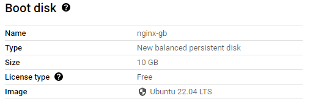
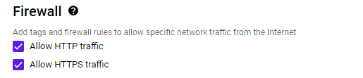
Our guestbook web site requires a name so we don't have to remember the external IP address to access it. To do so, we will utilize free DNS service and generate a name containing cs430<OdinID> that points to the VM's external IP address (e.g. cs430wuchang). Example services include
Note that if you get a rate-limit error on Let's Encrypt via one service, you will need to use the alternate ones. This is a result of Let's Encrypt being abused by malicious actors to create web sites with valid certificates that look legitimate. (This, of course, won't be an issue with our janky web application)
sslip.io
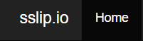

% host cs430wuchang.34.82.145.134.sslip.io
cs430wuchang.34.82.145.134.sslip.io has address 34.82.145.134
cs430wuchang.34.82.145.134.sslip.io mail is handled by 0 cs430wuchang.34.82.145.134.sslip.io.nip.io

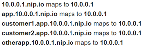
% host cs430wuchang.34.82.145.134.nip.io cs430wuchang.34.82.145.134.nip.io has address 34.82.145.134
noip.com
For this service, you can create an account and register a name in a number of supported domains.

We will now set up our guestbook web site on the Compute Engine VM and use the name from the prior step to obtain a TLS certificate.
If you are using a Compute Engine VM, ssh into it from the Web UI
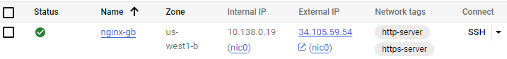
or from Cloud Shell via
gcloud compute ssh nginx-gbOnce connected to the VM, change the permissions for your home directory to add execute permissions for others to it. This will allow the web server, which runs with group www-data, to access resources we set up for it.
chmod o+X .Then, clone the repository and change into the source directory
git clone https://github.com/wu4f/cs430-src cd cs430-src/03_nginx_gunicorn_certbot
We will now examine the code and configuration of our application.
wsgi.py
Examine wsgi.py. The file is called upon initialization of gunicorn and simply Imports the app from app.py and runs it.
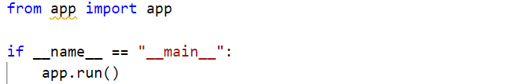
etc/systemd.template
The repository contains template files for configuring the server and nginx to run the Guestbook code. These templates will generate corresponding files in /etc, the directory where Linux configuration files are stored. The first template is etc/systemd.template. systemd is the default service manager for Ubuntu. The file configures the startup of the gunicorn daemon and its environment. In addition, the working directory is set to PROJECT_DIR, which will be replaced on installation with your directory. The PATH environment variable is set to the location where the Python environment's binaries will eventually be installed via a subsequent virtualenv. The last command configures the entry point for the Python application, sets the number of processes to use for it, and specifies the domain socket that will be used by the nginx web server to communicate with the web application.

The other template is etc/nginx.template which configures nginx with the server's DNS name (setup from the prior step) and the path to the root directory for the server. It also specifies that requests to the top-level path (/) should go through the gunicorn socket and be handled by the Python application while requests to the /static path should be served directly by nginx from the specified directory.
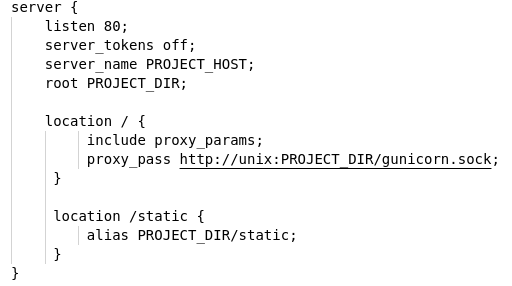
install.sh
The script used to setup the site is install.sh
The script takes one parameter: the DNS name you set-up earlier (e.g. cs430wuchang.34.82.145.134.sslip.io) and pulls out the first part of the DNS name, eliminating the first period and all subsequent characters. The name is used to label the systemd service for the site.
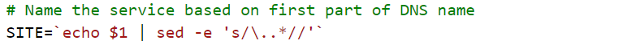
Then, the script installs python3, virtualenv, nginx, and certbot. It then creates the virtualenv environment for the web application and installs its packages into it from requirements.txt.
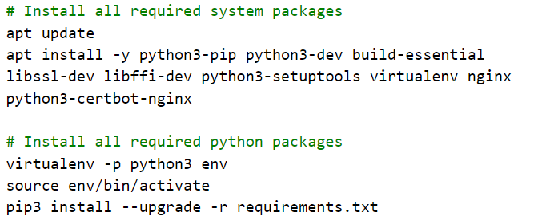
Then, the script sets up a systemd startup file for the web site from its template using sed to replace the PROJECT_DIR with the current working directory ($PWD) and PROJECT_USER with the current user ($SUDO_USER). It will then name the systemd service using the $SITE label above.
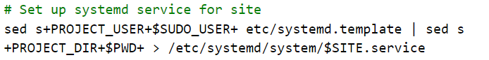
The script then sets up the nginx configuration file from its template using sed. Similar substitutions are made as well as a substitution for PROJECT_HOST using the fully-qualified domain name (FQDN) of the site (registered earlier). It also sets up nginx to add the site (via adding config file to /etc/nginx/sites-available and a link in /etc/nginx/sites-enabled to it)
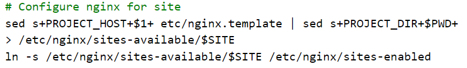
It then starts systemd service for the site, enables it by default (on startup), and restarts nginx for changes to take hold.
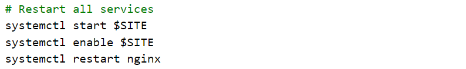
Run the install script, passing it the DNS name for your instance.
sudo ./install.sh <YourDNSNameHere>
Bring up a web browser and navigate to the application running on the instance over HTTP to ensure that you're able to access the Guestbook application that is running on it.
http://<YourDNSNameHere>
Then, fill in the command below with your OdinID to run certbot in order to obtain a TLS certificate for the web site from Let's Encrypt.
sudo certbot --nginx -d <YourDNSNameHere> -n -m OdinID@pdx.edu --agree-tos --redirect
Bring the site up in a browser over HTTPS. Within the browser, find the site's certificate, who it was issued by and the dates it is valid. Then, add an entry to the guestbook.
- Take a screenshot of the site along with its Let's Encrypt certificate and include it in your lab notebook
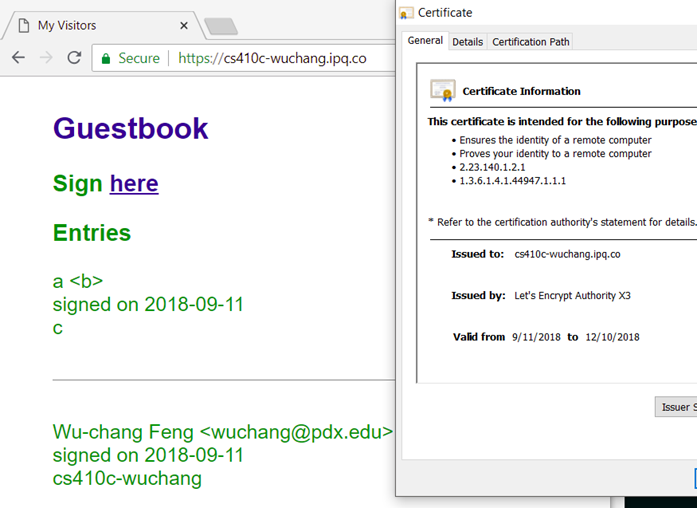
Option #1: Cloud Shell
Within Cloud Shell, deleting the instance can be done via:
gcloud compute instances delete nginx-gbOption #2: Web UI
Go to the web console of Compute Engine, find the VM in "VM instances" and select Delete. When prompted, confirm that you would like to delete the VM.
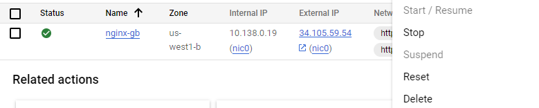